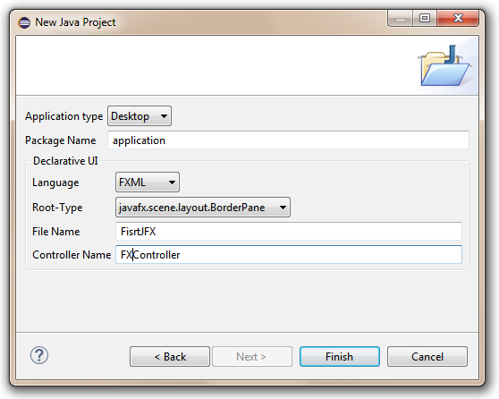

First JavaFX Application with OpenCV¶
Note
We assume that by now you have already read the previous tutorials. If not, please check previous tutorials at http://polito-java-opencv-tutorials.readthedocs.org/en/latest/index.html. You can also find the source code and resources at https://github.com/java-opencv/Polito-Java-OpenCV-Tutorials-Source-Code
Introduction to a OpenCV application with JavaFX¶
This tutorial will guide you through the creation of a simple JavaFX gui application using the OpenCV library by mean of Eclipse.
What we will do in this tutorial¶
- In this guide, we will:
- Install the
e(fx)clipseplugin and (optional) Scene Builder. - Work with Scene Builder.
- Write and Run our application.
- Install the
Our First Application in JavaFX¶
Our application is going to capture a video stream from our webcam and it will display it on our gui. We will create the gui with Scene Builder and it is going to have a button, which will allow us to stat and stop the stream and a simple image view container where we will put the stream frames.
Installing e(fx)clipse plugin and Scene Builder¶
In Eclipse, install the e(fx)clipse plugin, by following the guide at http://www.eclipse.org/efxclipse/install.html#fortheambitious.
If you choose not to install such a plugin, you have to create a traditional Java project and add jfxrt.jar (present in the JDK folder) to the project/library.
Download and install the JavaFX Scene Builder from http://www.oracle.com/technetwork/java/javafx/tools/index.html.
Now you can create a new JavaFX project. Go to File-->New-->Project... and select JavaFx project....

Choose a name for your project and click Next.

Now add your OpenCV user library to your project and click Next.

Choose a name for your package, FXML file and Controller Class. The FXML file will contain the description of your GUI in FXML language, the controller class will handle all the method and event which have to be called and managed when the user interacts with the GUI’s components.
Working with Scene Builder¶
If you have installed Scene Builder you can now right click on your FXML file in Eclipse and select Open with SceneBuilder.
Scene Builder can help construct you gui by interacting with a graphic interface; this allows you to see a real time preview of your window and modify your components and their position just by editing the graphic preview. Let’s take a look at what I’m talking about.
At fist the FXML file will have just an AnchorPane.
An AnchorPane allows the edges of child nodes to be anchored to an offset from the anchorpane’s edges. If the anchorpane has a border and/or padding set, the offsets will be measured from the inside edge of those insets.
The anchorpane lays out each managed child regardless of the child’s visible property value; unmanaged children are ignored for all layout calculations.
You can go ahead and delete the anchorpane and add a BorderPane instaed.
A BorderPane lays out children in top, left, right, bottom, and center positions.

You can add a BorderPane by dragging from the Container menu a borderpane and then drop it in the Hierarchy menu.
Now we can add the button that will allow us to start and stop the stream. Take a button component from the Controls menu and drop it on the BOTTOM field of our BP.
As we can see, on the right we will get three menus (Properties, Layout, Code) which are used to customize our selected component.
For example we can change text of our button in “Start Camera” in the Text field under the Properties menu and the id of the button (e.g. “start_btn”) in the fx:id field under the Code menu.


We are going to need the id of the button later, in order to edit the button properties from our Controller‘s methods.
As you can see our button is too close to the edge of the windows, so we should add some bottom margin to it; to do so we can add this information in the Layout menu.
In order to make the button work, we have to set the name of the method (e.g. “startCamera”) that will execute the action we want to preform in the field OnAction under the Code menu.

Now, we shall add an ImageView component from the Controls menu into the CENTER field of our BP. Let’s also edit the id of the image view (e.g. “currentFrame”), and add some margin to it.
Finally we have to tell which Controller class will mange the GUI, we can do so by adding our controller class name in the Controller class field under the Controller menu located in the bottom left corner of the window.
We just created our first GUI by using Scene Builder, if you save the file and return to Eclipse you will notice that some FXML code has been generated automatically.
Key concepts in JavaFX¶
The Stage is where the application will be displayed (e.g., a Windows’ window). A Scene is one container of Nodes that compose one “page” of your application. A Node is an element in the Scene, with a visual appearance and an interactive behavior. Nodes may be hierarchically nested . In the Main class we have to pass to the start function our primary stage:
public void start(Stage primaryStage)
and load the fxml file that will populate our stage, the root element of the scene and the controller class:
FXMLLoader loader = new FXMLLoader(getClass().getResource("MyFirstJFX.fxml"));
BorderPane root = (BorderPane) loader.load();
FXController controller = loader.getController();
Managing GUI interactions with the Controller class¶
For our application we need to do basically two thing: control the button push and the refreshment of the image view. To do so we have to create a reference between the gui components and a variable used in our controller class:
@FXML
private Button start_btn;
@FXML
private ImageView currentFrame;
The @FXML tag means that we are linking our variable to an element of the fxml file and the value used to declare the variable has to equal to the id set for that specific element.
The @FXML tag is used with the same meaning for the Actions set under the Code menu in a specific element.
for:
<Button fx:id="start_btn" mnemonicParsing="false" onAction="#startCamera" text="Start Camera" BorderPane.alignment="CENTER">
we set:
@FXML
protected void startCamera(ActionEvent event){ ...
Video Capturing¶
Essentially, all the functionalities required for video manipulation is integrated in the VideoCapture class.
private VideoCapture capture = new VideoCapture();
This on itself builds on the FFmpeg open source library. A video is composed of a succession of images, we refer to these in the literature as frames. In case of a video file there is a frame rate specifying just how long is between two frames. While for the video cameras usually there is a limit of just how many frames they can digitalize per second. In our case we set as frame rate 30 frames per sec. To do so we initialize a timer that will open a background task every 33 milliseconds.
TimerTask frameGrabber = new TimerTask() { ... }
this.timer = new Timer();
this.timer.schedule(frameGrabber, 0, 33);
To check if the binding of the class to a video source was successful or not use the isOpened function:
if (this.capture.isOpened()){ ... }
Closing the video is automatic when the objects destructor is called. However, if you want to close it before this you need to call its release function.
this.capture.release();
The frames of the video are just simple images. Therefore, we just need to extract them from the VideoCapture object and put them inside a Mat one.
Mat frame = new Mat();
The video streams are sequential. You may get the frames one after another by the read or the overloaded >> operator.
this.capture.read(frame);
Now we are going to convert our image from BGR to Grayscale format. OpenCV has a really nice function to do this kind of transformations:
Imgproc.cvtColor(frame, frame, Imgproc.COLOR_BGR2GRAY);
- As you can see, cvtColor takes as arguments:
- a source image (frame)
- a destination image (frame), in which we will save the converted image.
- an additional parameter that indicates what kind of transformation will be performed. In this case we usev
CV_BGR2GRAY(because ofimreadhas BGR default channel order in case of color images).
Now in order to put the captured frame into the ImageView we need to convert the Mat in a Image. We first create a buffer to store the Mat.
MatOfByte buffer = new MatOfByte();
Then we can put the frame into the buffer by using the imencode function:
Highgui.imencode(".png", frame, buffer);
This encodes an image into a memory buffer. The function compresses the image and stores it in the memory buffer that is resized to fit the result.
Note
cvEncodeImage returns single-row matrix of type CV_8UC1 that contains encoded image as array of bytes.
- It takes three parameters:
- (”.png”) File extension that defines the output format.
- (frame) Image to be written.
- (buffer) Output buffer resized to fit the compressed image.
Once we filled the buffer we have to stream it into an Image by using ByteArrayInputStream:
new Image(new ByteArrayInputStream(buffer.toArray()));
Now we can put the new image in the ImageView. With Java 1.8 we cannot perform an update of a gui element in a thread that differs from the main thread; so we need to get the new frame in a second thread and refresh our ImageView in the main thread:
Image tmp = grabFrame();
Platform.runLater(new Runnable() {
@Override public void run(){frameView.setImage(tmp);}
});

Source Code¶
public class Main extends Application {
@Override
public void start(Stage primaryStage) {
try {
// load the FXML resource
FXMLLoader loader = new FXMLLoader(getClass().getResource("MyFirstJFX.fxml"));
// store the root element so that the controllers can use it
BorderPane root = (BorderPane) loader.load();
// create and style a scene
Scene scene = new Scene(root);
scene.getStylesheets().add(getClass().getResource("application.css").toExternalForm());
// create the stage with the given title and the previously created scene
primaryStage.setTitle("JavaFX meets OpenCV");
primaryStage.setScene(scene);
// show the GUI
primaryStage.show();
// set a reference of this class for its controller
FXController controller = loader.getController();
controller.setRootElement(root);
} catch(Exception e) {
e.printStackTrace();
}
}
public static void main(String[] args) {
// load the native OpenCV library
System.loadLibrary(Core.NATIVE_LIBRARY_NAME);
launch(args);
}
}
public class FXController {
@FXML
private Button start_btn;
@FXML
private ImageView currentFrame;
private Pane rootElement;
private Timer timer;
private VideoCapture capture = new VideoCapture();
@FXML
protected void startCamera(ActionEvent event)
{
// check: the main class is accessible?
if (this.rootElement != null)
{
// get the ImageView object for showing the video stream
final ImageView frameView = currentFrame;
// check if the capture stream is opened
if (!this.capture.isOpened())
{
// start the video capture
this.capture.open(0);
// grab a frame every 33 ms (30 frames/sec)
TimerTask frameGrabber = new TimerTask() {
@Override
public void run()
{
Image tmp = grabFrame();
Platform.runLater(new Runnable() {
@Override
public void run()
{
frameView.setImage(tmp);
}
});
}
};
this.timer = new Timer();
//set the timer scheduling, this allow you to perform frameGrabber every 33ms;
this.timer.schedule(frameGrabber, 0, 33);
this.start_btn.setText("Stop Camera");
}
else
{
this.start_btn.setText("Start Camera");
// stop the timer
if (this.timer != null)
{
this.timer.cancel();
this.timer = null;
}
// release the camera
this.capture.release();
// clear the image container
frameView.setImage(null);
}
}
}
private Image grabFrame()
{
//init
Image imageToShow = null;
Mat frame = new Mat();
// check if the capture is open
if (this.capture.isOpened())
{
try
{
// read the current frame
this.capture.read(frame);
// if the frame is not empty, process it
if (!frame.empty())
{
// convert the image to gray scale
Imgproc.cvtColor(frame, frame, Imgproc.COLOR_BGR2GRAY);
// convert the Mat object (OpenCV) to Image (JavaFX)
imageToShow = mat2Image(frame);
}
}
catch (Exception e)
{
// log the error
System.err.println("ERROR: " + e.getMessage());
}
}
return imageToShow;
}
private Image mat2Image(Mat frame)
{
// create a temporary buffer
MatOfByte buffer = new MatOfByte();
// encode the frame in the buffer
Highgui.imencode(".png", frame, buffer);
// build and return an Image created from the image encoded in the buffer
return new Image(new ByteArrayInputStream(buffer.toArray()));
}
public void setRootElement(Pane root)
{
this.rootElement = root;
}
}
<?xml version="1.0" encoding="UTF-8"?>
<?import java.lang.*?>
<?import javafx.geometry.*?>
<?import javafx.scene.control.*?>
<?import javafx.scene.image.*?>
<?import javafx.scene.layout.*?>
<?import javafx.scene.layout.BorderPane?>
<?import javafx.scene.image.ImageView?>
<?import javafx.scene.layout.HBox?>
<?import javafx.scene.control.Button?>
<?import javafx.geometry.Insets?>
<BorderPane maxHeight="-Infinity" maxWidth="-Infinity" minHeight="-Infinity" minWidth="-Infinity" prefHeight="400.0" prefWidth="600.0" xmlns="http://javafx.com/javafx/8" xmlns:fx="http://javafx.com/fxml/1" fx:controller="application.FXController">
<bottom>
<Button fx:id="start_btn" mnemonicParsing="false" onAction="#startCamera" text="Start Camera" BorderPane.alignment="CENTER">
<BorderPane.margin>
<Insets bottom="10.0" />
</BorderPane.margin></Button>
</bottom>
<center>
<ImageView fx:id="currentFrame" fitHeight="150.0" fitWidth="200.0" pickOnBounds="true" preserveRatio="true" BorderPane.alignment="CENTER">
<BorderPane.margin>
<Insets bottom="10.0" left="10.0" right="10.0" top="10.0" />
</BorderPane.margin></ImageView>
</center>
</BorderPane>